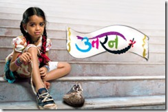

आप चौंक गये ना शीर्षक पढ़ कर!
 |

पहले कहानी घर-घर की उसके बाद क्यूं कि… उसके बाद कभी कभार मुझे समाचार देखने का मौका मिलता पर अक्सर होता ये कि 11 बजे अधिकतर चैनल और उनके रिपोर्टर अजीब से स्वर में (चैन से सोना है तो..) क्राईम समाचार पढ़ रहे होते। अंत में डिस्कवरी चैनल पर कुछ देखा ना देखा और नींद आ जाती।
सास बहू ब्रांड की चमक फीकी होने लगी तभी एन डी टी वी के इमैजिन चैनल का जन्म हुआ और अब जस्सू बेन… और फिर मैं तेरी परछाई हूं, देखने पड़ते। ये अलग बात है कि धारावाहिक स्टार के धारावाहिकों से लाख दर्जे बेहतर थे, पर धीरे धीरे जस्सू बेन भी बोर करने लगी और मैं तेरी परछाई… का समय बदल गया, तो कुछ देर (साढ़े दस से ग्यारह) तक समाचार या अपना कोई पसंदीदा चैनल/कार्यक्रम देखने का मौका मिल जाता, क्यों कि अब 11 बजे बालिका वधू “आनंदी” और साढ़े ग्यारह बजे उतरन की “इच्छकी” इंतजार कर रही होती। 
ये दो धारावाहिक दूसरे धारावाहिकों की वनिस्पत अच्छे लगते हैं, “आनंदी” ,”इच्छकी” और “तपस्या” का अभिनय बड़े बड़ों को दांतो तले उंगली दबवा देता है, परन्तु ग्यारह बजे के बाद इन्हें देख पाना मुश्किल है, कई बार तो देखते देखते नींद आ जाती है।
पिछले हफ्ते इमैजिन चैनल ने खुश कर दिया कि अब जस्सू बेन…. शुक्र,शनि- रवि को आया करेगी। हाश!!!! यानि सोमवार से लेकर गुरुवार तक दस से ग्यारह बजे तक कोई ऐसा धारावाहिक किसी भी चैनल पर नहीं बचा जिसे जबरन देखना पड़ेगा। अब टी वी से वास्तव में मुक्ति मिलेगी, रेडियो विविध भारती पर गाने भी सुने जा सकेंगे, पुस्तकें जिन्हे कई दिनों से पढ़ने का समय नहीं मिल रहा था, उसके लिये एक घंटा मिल सकेगा।
अब बताईये टीवी चैनल्स को धन्यवाद कहना सही है कि नहीं?